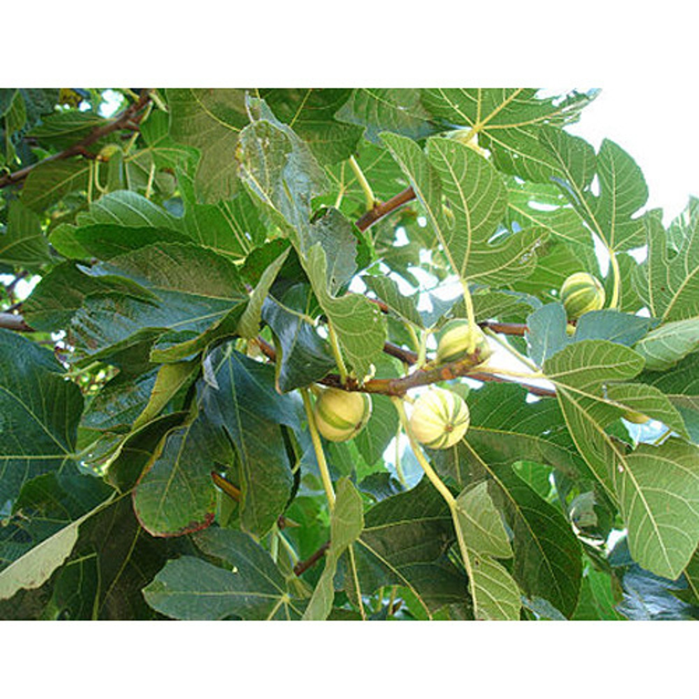

Basonym of Drug
Plaksha
Main Synonym
Jati, Parkari, Parkati
Regional Name
- Bengali: Paki, Pakura
- Gujarati: Pipar
- Hindi: Pakar, Pakahra
- Tamil: Kurugu
- Telugu: Jubvi
- Marathi: Pait, Pimpari Vruksha
Botanical Name
Ficus lacor / Ficus virens
Family
Moraceae
Classification (Gana)
Bhavprakash Nighantu: Vatadi Varga
Sushruta Samhita: Panchvalkal Gana, Nygrodhadi Gana
Charak Samhita: Mutrasangrahaniya Mahakashaya
Astanga Sangraha: Nygrodhadi Gana
External Morphology
15-20 meter high tree
Useful Parts
Stem bark, leaves, leaf bud, fruit
Important Phytoconstituents
Alpha and Beta-Amyrins, Lupeol, Campesterol, Beta-Sitosterol, Caffeic Acid, D-Glucoside, Vitamin-K, Methyloleanolate, Stigmasterol
Rasa Panchak
- Rasa: Kashaya
- Guna: Guru, Ruksha
- Virya: Shita
- Vipaka: Katu
Action
Kaphapittahara
Therapeutic Indication
- Vranaropana (Wound-healing)
- Sothahara (Anti-inflammatory)
- Mutrasangrahaniya (Treat excessive micturition)
- Shukrala (Aphrodisiac)
- Pramehahara (Anti-diabetic)
- Yonirogahara (Useful to treat vaginal infections)
Therapeutic Uses
- Vrana: Decoction of the bark is useful to clean and heal wounds.
- Raktapitta: Tender leaves of Plaksha with Tanduliya is given as food preparation in bleeding disorders.
- Swetapradara: Decoction of the bark is useful as a doush to treat leucorrhea.
Dose
- Powder: 3-6 gm
- Decoction: 40-80 ml
Formulations
- Panchvalkal Kwath
- Mutrasangrahaniya Kwath
Adverse Effect
Not Known
Remedial Measure
Not Required
Purification
Not Required